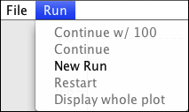
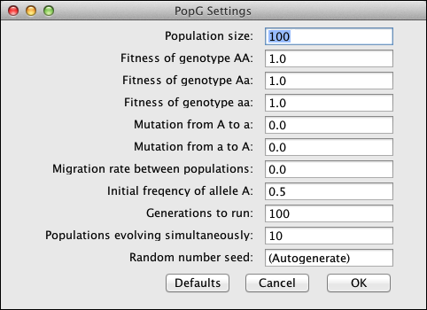
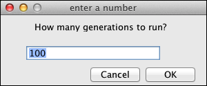

![[PopG icon here]](popg.gif)
At its web site evolution.gs.washington.edu/popgen/ is a downloadable "zip archive" which contains a Java archive file which has the Java executable as well as the Java source code. It also has this web page. There is also a folder images for the screenshot images used in this web page. The compiled Java code in the Java archive file can be run on any system that has a reasonably recent version of Java installed.
The Java source for popg is called PopGUserInterface.java and is in the folder src. It was developed in the Eclipse development environment but any environment you are comfortable with will do. Note: Normally you will not need the source code and you will not need to recompile the program. The source code is there so you can see how things were done and use it as a base to make changes to the program and extensions of the program, should you wish to do so. Most users can ignore it.
You can fetch PopG using the links below.
We have posted a Zip archive of PopG, including Java archives and documentation files. This archive is file PopG.zip. To get it
Here are instructions for saving, unpacking, and installing PopG from different browsers, and on operating systems. We cover the Chrome, Firefox, Safari, and Internet Explorer browsers on the Windows, Mac OS, and Linux operating systems.
Using Chrome on Windows, Mac OS, or Linux
Using Firefox on Windows, Linux, or Mac OS
Using Internet Explorer on Windows
Using Safari on Mac OS
A MAC PROBLEM: On Mac OS systems, when you attempt to extract the Zip archive, or when you attempt to run the Java executable, the system may complain that this is from an unknown developer. That is simply because I did not sign the file with my Apple Developer ID. You should be able to make the operation work by control-clicking on the icon and selecting the option to open the file, using the defaults suggested. Once it successfully gets past this, it will not bother you with this again the next time you try to run the program.
The Java archive file PopG.jar will exist in the folder PopG once you have downloaded and installed PopG. If you have Java installed on your system, you should be able to run the Java program by finding the folder PopG and clicking or double-clicking on the icon of the file PopG.jar
The PopG folder also includes the present documentation web page which you are now reading. This can be read here or you can use the Save As menu item in the File menu of your browser to save a copy of it on your machine. The latest version of this page can be read on the Web using this link.
There are also older executable versions compiled for Windows, Mac OS, and Linux systems, plus some even older operating systems. These can be fetched from folder old at our PopG site. Most users should not use these older executables, but if you do, you should start by reading the README file in that folder. One of the versions there is version 3.4, which has compiled executables for the three major operating systems available as well as C source code. These may be useful if you do not have Java and cannot install it on your system.
We would like to make versions available for tablets and even phones. Unfortunately, a version of Java that can use the graphics functions does not seem to exist on the Android operating system and the iOS operating system. We would have to rewrite the program separately for each of those. If you know of a way to run our Java executables on either of those operating systems, and get it to work, please let us know how you did that.
If you have Java installed you can run the PopG program. Generally, Java will be already installed on Mac OS systems and on Linux systems. If you aren't sure if you have Java installed, you can type java -version in a command window and, it Java exists, it will tell you what the version is. If you get back a blank line, you need to either download Java or append where it is to your search path. On Windows systems and on Mac OS or Linux systems that do not have Java, you can install a recent version of Java at no cost by using this link: java.com. Recent Linux and Mac OS systems usually have a recent-enough version of Java already installed. Mac OS systems 10.4 (Leopard) and earlier may not have a recent-enough Java to be able to run PopG. Windows systems do not come with Java already installed, but it can be installed on them from the above web site.
To run the PopG Java program you should simply click (or double-click) on the icon of the PopG.jar file (you can also run it from a command window by navigating to where PopG.jar is stored and typing java -jar PopG.jar). The start up screen looks like this:
There are two menus, File and Run, that control PopG. They are in the upper left of the main PopG window.
The Run menu contains five items: Continue w/, Continue, New Run, Restart, and Display Whole Plot.
The first time it is picked, it looks like:
|  |
with all but New Run grayed out. Once you have done your first run, all the selections will be active.

It contains all the parameters that control a PopG run. Note that usually you do not enter a Random Number seed unless you want to do two identical runs. When you are finished editing you can click the OK box to start the run. You can also click Cancel to not start the run and Defaults to reset all the data entry boxes to their default values.
which allows you to change the number of generations run in the next continuation of the run.
The program uses a random number generator which automatically initializes from your system clock. Thus it should give you a different sequence of random numbers and thus a different result every time you run the program. In the menu for a new run, there is a setting for Random number seed which is set by default to (Autogenerate), which will initialize from the system clock. You probably won't have any reason to change this, unless you are debugging PopG and want to do the same run, with the same random outcomes, twice. If you do wish to do the same exact run twice, enter a value in place of the (Autogenerate) string and PopG will use that to initialize the random number generator. Assuming you have not modified the calcPopG routine within the Java code, every time you start with that random number you will get exactly the same results.
This contains four menu items. They are Save, Print, About and Quit.
The first time it is displayed, it looks like:
with Save and Print grayed out. Once you have done your first run, they will be active.
Most people will not need to compile the program themselves as the Java Jar package supplied should run on most versions of Java. So you should probably skip this section. But if you wish to modify the functionality of PopG or if you have some unusual Java environment that will not run the supplied Jar file you will need a Java compiler. We repeat: If you just need to run the program, you should run the Jar file that comes in our distribution. You do not need to compile anything (though you may need to install Java).
If you do need to compile the program, you will find a src directory in the downloaded and unzipped folder PopG which you got from our site. Import the file PopGUserInterface.java from src into your favorite Java editor (we used Eclipse). You can either execute it directly from there or export a Java Jar from the editor and execute it. PopGUserInterface.java does not reference any external libraries, everything it needs is in the JavaSE-1.6 system library. If you are modifying our program, once you have finished doing that you should have no problems creating the Java Jar,
If you cannot do, tell us, since that would be a bug.
This program simulates the evolution of random-mating populations with two alleles, arbitrary fitnesses of the three genotypes, an arbitrary mutation rate, an arbitrary rate of migration between the replicate populations, and finite population size.
The programs simulate simultaneously evolving populations with you specifying the population size, the fitnesses of the three genotypes, the mutation rates in both directions (from A to a and from a to A), and the initial gene frequency. They also ask for a migration rate among all the populations, which will make their gene frequencies more similar to each other. Much of the time (but not always!) you will want to set this migration rate to zero. In most respects the program is self-explanatory.
Initially there are ten populations. You can set the number of simultaneously-evolving populations to any number from 0 to 1000. The population size for each population can be any number from 1 to 10000. Note that a larger population, a larger number of generations run, and a larger number of populations can lead to longer runs.
When you make a menu selection that causes the program to run, a graph of the gene frequencies of the A allele in each of the populations will be drawn in the window. Here is what the graph looks like when we run with an initial gene frequency of 0.2 and fitnesses of AA, Aa, and aa set to 1.08, 1.04, and 1, with all other parameters in their default values. (Note that if you try this run, there will be different random numbers, so your result will be a bit different).
Note that once the plot of the gene frequency curves reaches the right-hand side of the graph, the program prints there the number of populations that fixed for the A allele (ended up with a frequency of 1.0) and the number that lost this allele.
The program can simulate a wide variety of cases, and you should explore some of these. Here are some suggestions:
Version 4.0 of PopG, the first Java version, was written by Ben Zawadzki. His enormously effective programming made good use of mentorship and advice from our lab's Java wizard, Jim McGill.
The original version of PopG was written in the 1970s in FORTRAN by Joe Felsenstein. The interactive version then was written in C with much work by Hisashi Horino, Sean Lamont, Bill Alford, Mark Wells, Mike Palczewski, Doug Buxton, Elizabeth Walkup, Ben Zawadzki and Jim McGill. Hisashi and Sean wrote the C version, and the screen graphics for IBM PC and the first part of the Postscript printing system. Bill greatly improved and expanded the Postscript printing and the X windows graphics. Mark Wells did the original Macintosh version. Mike Palczewski greatly improved the Windows, Macintosh and X Windows graphical user interface, and Doug Buxton modified the program to the 3.0 version and prepared the executables for different operating systems. Elizabeth Walkup improved the X windows interaction and prepared version 3.3. Small documentation changes after version 4.0 were made by me.
Copyright 1993-2016. University of Washington and Joseph Felsenstein. All rights reserved. Permission is granted to reproduce, perform, and modify this program. Permission is granted to distribute or provide access to this program provided that this copyright notice is not removed, this program is not integrated with or called by any product or service that generates revenue, and that your distribution of this program is free. Any modified versions of this program that are distributed or accessible shall indicate that they are based on this program. Educational institutions are granted permission to distribute this program to their students and staff for a fee to recover distribution costs. Permission requests for any other distribution of this program should be directed to license (at) u.washington.edu.
| Joe Felsenstein Department of Genome Sciences University of Washington Box 355065 Seattle, WA 98195-5065, USA |
email: joe (at) gs.washington.edu